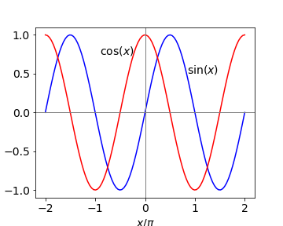
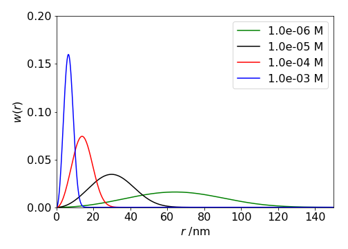

Trig functions, logs, power, reciprocals and integrals
Contents
Trig functions, logs, power, reciprocals and integrals#
# import all python add-ons etc that will be needed later on
%matplotlib inline
import numpy as np
import matplotlib.pyplot as plt
from sympy import *
init_printing() # allows printing of SymPy results in typeset maths format
plt.rcParams.update({'font.size': 14}) # set font size for plots
3.9 Sine and cosine#
Sine and cosine functions are almost mirror images of one another when differentiated,
which makes sense if one inspects a graph of these functions, see Fig. 5. The value of the cosine at any point is the gradient of the sine at that point and the gradient of the cosine is \(-1\) times the value of the sine. When the sine has its maximum or minimum, where the gradient is zero, the value of the cosine is also zero. Furthermore, when the gradient of the sine is positive, \(x/\pi = 0 \to 1/2\) and also \(3/2 \to 2\), the value of the cosine, which is the derivative, is positive. When the gradient of the sine is negative, the value of the cosine is negative. It is therefore not surprising that on differentiating these functions again they turn into one another but with a change of sign depending upon how many times this is done.
the pattern being \( +\cos,\; -\sin,\; -\cos,\; +\sin \cdots\) with the powers of \(a\) increasing each time.

Figure 5. Sine and cosine over two periods.
3.10 Other trig functions, tan, sec and hyperbolic functions sinh, cosh and their inverse.#
There are many other trigonometric and closely related hyperbolic functions besides sine and cosine, and most can be treated by the differentiation methods described in the next few sections based on basic differentiation. One useful way is to convert to the exponential form first. Sine and cosine can easily be differentiated this way, then converted back to a trig form. A tangent, for example, is the ratio of sine/cosine and is treated as a ratio. Others functions such as sec(x) which is 1/cos(x) can be treated as a function of a function, Section 5.1, either in the trig or exponential form. The hyperbolic functions cosh, sinh, and tanh also have exponential representations.
The inverse functions \(\displaystyle y=\sin^{−1}(x),\; y = \cosh^{-1}(x)\), and so forth can be treated by rearranging the equation, for instance,
and differentiating both sides (see eqn. 6 ), produces, \(\displaystyle \cos(y)\frac{dy}{dx}=2x\) and \(y\) can be substituted into this using \(\displaystyle \cos^2(x)+\sin^2(y)=1\) giving
The final result is
The Pythagoras right-angled triangle can also be used to convert between trig functions. See Chapter 1.5 and a table of many functions is given in section 4.17.
3.12 Logarithms#
Differentiating logarithms always has the form: ‘derivative divided by the function’.
for example,
Differentiating \(\ln(y)\) with respect to \(x\) produces a most useful form, which is worth remembering
The van’t Hoff equation of chemical thermodynamics has this last form,
This equation describes the change of an equilibrium constant \(K_p\) for a reaction carried out at constant pressure with temperature \(T\) and quantifies the Le Chatelier principle. \(\Delta_rH^{\mathrm{o}}\) is the standard molar enthalpy of the reaction. In this form it is easier to plot or integrate wrt.temperature.
A particularly cunning and somewhat complicated example using this log derivative is to solve the equation
where both \(R\) and \(S\) are functions of \(x\). The first step is to divide by \(R\) and then to use the form of equation 11 on the derivative in \(R\).
Now suppose we substitute \(U =dS/dx\) then \(dS^2/dx^2\equiv dU/dx\),
and then divide by \(U\) and use eqn 11, substitute back and simplifying gives
The solution is
where \(C\) is a constant. The reason \(C\) is there is that this is the general form and is simplified from the derivative of a log, since \(\displaystyle \frac{d}{dx}\ln(Cx)=\frac{1}{x}\).
3.13 \(x\) as a power:#
Expressions such as \(y=a^x,\;y=x^{1/x},\; y= x^x \) etc. can be differentiated quite easily with a little care.
(i) \(a^x\)#
In cases where there are powers of \(x\) it is best to take logs of both sides first. For example, if \(y = a^x\), taking logs of both sides gives \(\ln(y) = x \ln(a)\) and differentiating produces
and simplifying produces
In the special case that \(a = e\) (\(e\) is the exponential constant), then the exponential derivative is retrieved because \(\ln(e) = 1\).
(ii) Which is larger \(e^\pi\) or \(\pi^e\) ?#
As a second example we differentiate \(x^{1/x}\) and from this we can determine which is larger \(e^\pi\) or \(\pi^e\).
First take logs giving \(\displaystyle \ln(y)=\frac{1}{x}\ln(x)\) and then differentiate and using eqn. 11 to simplify gives
To determine which is bigger by dividing \(e^\pi \) and \( \pi^e\) by \(e\) and \(\pi\) means that we should compare \(e^{1/e}\) and \(\pi^{1/\pi}\). The thing to realize here is that if we find the maximum of the derivative of \(x^{1/x}\) we can then check which of our two terms is bigger. To find the minimum/maximum is very simple (see section 9) and is found by setting the derivative to zero, then \(\ln(x)=1\) so that \(x=e\) is the global maximum and this means that \(e^{1/e}\) is the maximum possible value and so \(e^\pi\; \gt\; \pi^e\).
(iii) Factorials#
A factorial is defined as \(x!=x\cdot(x-1)\cdot (x-2)\cdots 2\cdot 1\) where \(x\) is an integer, thus this function cannot be differentiated. Factorials occur most commonly in evaluating probabilities such as the binomial coefficients
and sometimes it is necessary to determine the maximum of a distribution containing this term, which thus requires differentiation.
Fortunately, for large \(x\) Stirling’s Rule can be used which is
where \(x\) is now a variable. Differentiating the log produces
To find the maximum in \(\displaystyle \binom{n}{x}\equiv y=\frac{n!}{x!(n-x)!}\),
substitute for the factorials using Stirling’s formula, differentiate and set the result to zero.
substituting for \(y\) produces
and the maximum (or minimum) is found when the derivative is zero which can only be when \(\ln(x)=\ln(n-x)\) or \(x=n/2\). This can only be a maximum because the distribution is always positive and can be confirmed by direct calculation or plotting values. See Pascal’s triangle and Binomial distribution in Chapters 1 and 12.
3.14 Reciprocal derivatives#
Occasionally it is necessary, or simpler, to find \(dx/dy\) rather than invert the equation to put it in terms of \(y = \cdots\) and calculate \(dy/dx\). The derivatives are related as double reciprocals;
As an example, suppose that \(\displaystyle \sin(y^2) = x\), differentiating by \(y\) gives the result \(\displaystyle dx/dy = 2y \cos(y^2)\). Differentiating by \(x\) could mean that a rearrangement must first be done to form \(\displaystyle y = \sqrt{\sin^{-1}(x)}\) and then this differentiated, which is quite involved. Instead using equation (6), the result is obtained directly \(\displaystyle 2y \cos(y^2)dy/dx = 1\) and these two results show that equation (13) is true.
3.15 Differentiating integrals#
If you are unfamiliar with integration, it will help to know the basic rules; see Chapter 4. It is possible to differentiate integrals; well why not! Integration and differentiation are linked as shown in equation (1) and as given by the fundamental theorem of the calculus:
\(a\) being a constant and \(F\) is the result of integration. The variable \(u\) used in the integration is a dummy variable, any letter could be used instead, but it is better in this instance not to use \(x\) as this can be confusing. In this formula at least one of the integration limits must be a function of \(x\) as explained next.
Differentiating the integral with two limits both of which are constants, i.e. simply numbers \(a\) and \(b\), produces a result of 0, because integration with such limits produces a number, e.g. the area under the curve from \(a\) to \(b\), see Fig. 1, and the differential of a constant is zero,
In the more complex and general cases, where the limits \(u\) and \(v\) are themselves functions of \(x\), the function of function rule is used (Section 5.1),
which is also called Leibniz’s Rule. An example where \(x^2\) is one of the limits is,
The aim in differentiating integrals is not to work out the integral first, which might not be possible anyway, and then differentiate the result, but to use equation (15), which avoids doing this.
Nearest Neighbour Distribution#
One interesting, but rather sophisticated example of differentiating integrals occurs when finding the distribution of nearest (closest or first) neighbour molecules in a solution, Chandrasekhar(1943).
Let \(w(r)\) be the probability that the nearest neighbour occurs between distance \(r\) and \(r + dr\). This must be the probability than no molecules exist up to \(r\) and that the next molecule exists in the shell \(r \to r + dr\). Thus,
where \(n\) is the average number of molecules / unit volume. (\(1 \mathrm{\,mol\,m^{-3}} \equiv 10^3 N_A/10^{27} = 0.6023 \) molecules / nm\(^3\)). The term in brackets is 1-probability that a molecule exists, i.e. that it does not exist in \(0 \to r\) and the integral is the probability that it exists in \(0 \to r\). The \(4\pi r^2 n\) is the number of molecules in the shell \(\delta r\).
This looks hard to solve because \(w(r)\) is also inside the integration, so it is necessary to isolate the integral first (by dividing both sides by \(4\pi r^2 n\)) and then differentiating both sides to find
In the next step we multiply the rhs. by one by multiplying top and bottom by the same term,
The result is seen by inspection if you recognize that by letting \(w(r)/4\pi r^2 n=y\) and integrating the equation it has the form \(\displaystyle \int\frac{dy}{y}=-4\pi n \int r^2dr \) which is a standard integral (see chapter 4) and gives
The shape of \(w(r)\) can be worked out just by looking at it. The term in \(r^2\) causes \(w(r)\) to increase and the exponential to decrease, thus we expect it to start at zero reach a maximum and fall off to zero at large \(r\). Physically this is what one might expect, no near neighbour will be at at zero distance and none either at very large distances because they are all present at some shorter distance.

Figure 5a. Probability of a nearest neighbour \(w(r)\) at various concentrations.
Functions of two variables#
A different case, and one to be aware of, involves function in two variables, say \(x\) and \(y\). In this example, notice the variable of the integration is \(y\), that of differentiation \(x\), and therefore the differentiation is first performed inside the integration.
After differentiation with respect to \(x\), \(x\) is treated as a constant because integration is in \(y\). For example,
where the integral of \(y\) is \(y^2/2\), see Chapter 4. Another example of this is,
where differentiation is with respect to \(a\) and not \(x\). The partial derivative symbol \(\partial\) is used inside the integration sign to specify that only \(a\) in this case is to be differentiated.
3.16 Fractional derivatives#
While it is possible to repeatedly take derivatives of many functions, for instance \(\displaystyle \frac{d^3}{dx^3}\sin(x)\), what about the \(1/3\) or \(1/2\) or \(-1\) derivative? What would such a thing mean? In the case of \(1/2\) derivatives we can say that if the function is \(x^n\) then the half derivative is such that \(\displaystyle \frac{d^{1/2}}{dx^{1/2}}\frac{d^{1/2}}{dx^{1/2}}x^n\equiv nx^{n-1}\). In other words differentiating, or operating twice on \(x^n\) with \(d^{1/2}/dx^{1/2}\), is the same as differentiating once with \(dy/dx\).
The general result for the \(n^{th}\) derivative of \(x^m\) is \(\displaystyle \frac{d^ny}{dx^n}=\frac{m!}{(m-n)!}x^{m-n}\) which can be generalised if \(n\) is a fraction by changing the factorials to gamma functions as \(n!=\Gamma (n+1)\) thus \(\displaystyle \frac{d^ny}{dx^n}=\frac{\Gamma (m+1)}{\Gamma(m-n+1)}x^{m-n}\). As many functions can be expressed as power series it is possible to fractionally differentiate these. However, these unusual derivatives need not have more than a curiosity interest for us; they appear in Morse’s paper on the anharmonic oscillator (P. Morse, Physical Review, 34, 57, 1929) and hardly anywhere else.
3.17 Table of the differentials of some common functions.#
\(a,\;,b,\;\) and \(n\) are treated as constants.
Using python/Sympy is very easy for more complex functions.
x,a,b = symbols('x,a,b')
f01 = x**b*sin(a*x)**3
diff(f01,x)